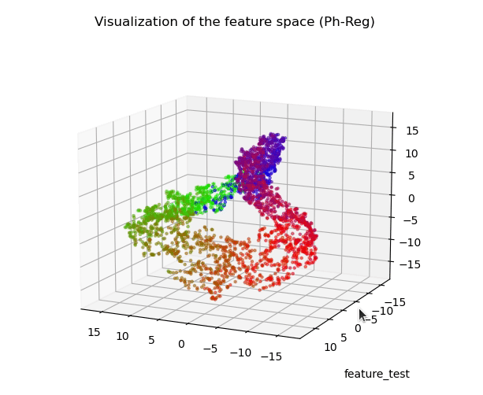
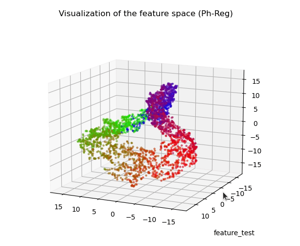

|
Most works studying representation learning focus only on classification and neglect regression. Yet, the learning objectives and, therefore, the representation topologies of the two tasks are fundamentally different: classification targets class separation, leading to disconnected representations, whereas regression requires ordinality with respect to the target, leading to continuous representations. We thus wonder how the effectiveness of a regression representation is influenced by its topology, with evaluation based on the Information Bottleneck (IB) principle. The IB principle is an important framework that provides principles for learning effective representations. We establish two connections between it and the topology of regression representations. The first connection reveals that a lower intrinsic dimension of the feature space implies a reduced complexity of the representation Z. This complexity can be quantified as the conditional entropy of Z on the target Y, and serves as an upper bound on the generalization error. The second connection suggests a feature space that is topologically similar to the target space will better align with the IB principle. Based on these two connections, we introduce PH-Reg, a regularizer specific to regression that matches the intrinsic dimension and topology of the feature space with the target space. Experiments on synthetic and real-world regression tasks demonstrate the benefits of PH-Reg.
|

 
